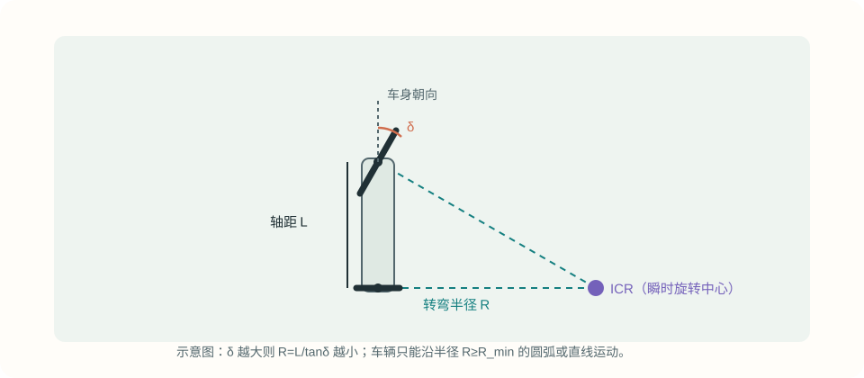
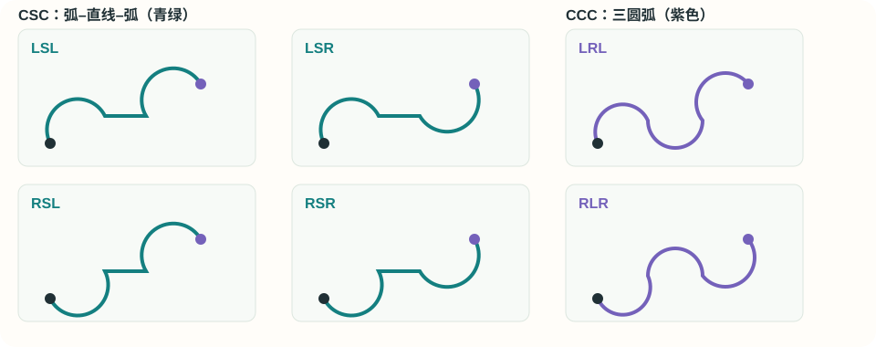
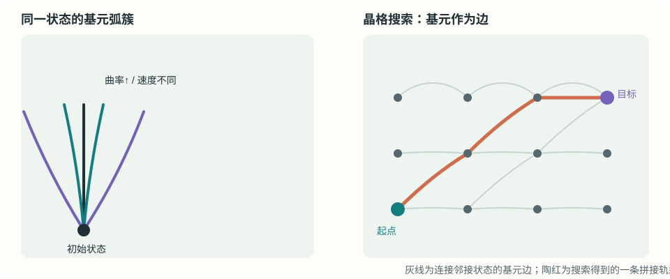

运动学约束与曲线：地图上通的路径，车一定能走吗？
前两章的局部方法隐含了一个假设：机器人能执行任意瞬时速度。阿克曼车不能原地转向，固定翼不能悬停。本章把“机器人到底能做什么运动”变成规划的一部分：自行车模型、Dubins、Reeds-Shepp 与运动基元。
几何路径不等于可执行轨迹
栅格上的 A* 输出一串位置点，每两点的连线都是直线段。但阿克曼车（汽车）的最小转弯半径有限：通道宽度小于转弯直径时，90° 的直角拐弯根本无法完成。路径在地图上“通”，在运动学上却“不可行”。
关键转变是把规划输出从几何路径（一串位置）变成可执行运动（满足运动学约束的连续轨迹）。如果只在规划完成后做平滑，最多能缓解，却不能保证原本不允许的转弯变得可行。约束应当前置到规划阶段。
本章讨论的是“机器人能做哪些运动”，属于运动规划的范畴，而非纯几何的路径规划。
自行车模型与曲率约束
最常用的阿克曼车简化模型是自行车模型：把前后轮各并成一个轮，用轴距 L 与前轮转向角 δ 描述运动。状态是位姿 (x, y, θ)，控制量为车速 v 与转向角 δ：
由 （1）可推出路径曲率与转向角的关系。因为 κ = dθ/ds，而 ds = v·dt，于是：
因为 |δ| ≤ δ_max，所以 |κ| ≤ tan δ_max / L = 1/R_min。这就把“能不能拐”变成了一条曲率上界：整条轨迹上每一点的曲率都不能超过它。图 18-1 给出几何关系：转向角越大，瞬时旋转中心（ICR）越近，转弯半径越小。
KINEMATICS · 18

Dubins 曲线：只前进的最短路径
Dubins（1957）回答了一个精确的问题：一辆只能沿前进方向运动、且有最小转弯半径的车辆，从一位姿到另一位姿的最短路径是什么。结论是：最短路径一定可以写成三个基本词（word）的拼接，每个词是左转弧 L、右转弧 R 或直线 S；而且只可能是两种结构——CSC（弧–直线–弧）或 CCC（弧–弧–弧）。
排除对称后，可行的词只剩 6 种：LSL、LSR、RSL、RSR（CSC）与 LRL、RLR（CCC）。算法就是：对每种词解三角方程，取长度最小且有效的那个。所有圆弧半径都等于最小转弯半径，因此结果天然满足曲率约束。
KINEMATICS · 18

“最短”是在 Dubins 的运动限制集合里成立：只前进、曲率有上界。它不意味着这条路径是全局最优的——如果允许倒车，最短解可能属于 Reeds-Shepp 的词集。
Reeds-Shepp：允许前进与倒车
Reeds 与 Shepp（1990）把词集里每个基本运动都加上前进/后退（符号 +/−），证明最短路径总可以用有限个词族表示。经典结果是共 48 种词、归为 9 个族（CSC、CCC 及其带符号变体），因此平行泊车这类“要前后挪几次”的动作就能被一条整体最短曲线同时表达。
| 维度 | Dubins 曲线 | Reeds-Shepp 曲线 |
|---|---|---|
| 允许倒车 | 否 | 是（每段带 +/−） |
| 词的数量 | 6 | 48（9 族） |
| 典型场景 | 只前进的车辆、固定翼航迹 | 泊车、狭窄空间、需要倒车的车辆 |
| 最短性 | 在“只前进”集合内最短 | 在“可倒车”集合内最短，通常更短 |
允许倒车的关键几何特征是 cusp（换向点）：曲线在此处线速度为零并改变符号。它让一条整体路径可以交替前进与倒车，而不必在规划层把它们拼成两段。
KINEMATICS · 18

运动基元与晶格规划
Dubins 与 Reeds-Shepp 是针对特定模型（自行车/阿克曼）的解析结果。对差速轮、带拖车、四足等不同机器人，不可能每种都推导出闭式最短解。更通用的做法是运动基元（motion primitives）：
- 离线生成一批短时长、运动学可行的轨迹片段，覆盖不同速度、转向与时长；
- 把每个片段的相对位移（局部坐标下的终点状态）存起来；
- 在线把这些片段当作图的边，在晶格（lattice）上搜索拼接，得到完整轨迹。这就是晶格规划。
关键好处是：可行性在离线生成基元时就已保证，在线只需拼接，因此搜索过程中不必逐条重新验证动力学可行性（但仍需做碰撞检查）。基元库换掉就能适配不同机器人类型。
KINEMATICS · 18

这类方法广泛用于自动驾驶局部规划中的候选轨迹生成。对不同机器人，只需重新生成基元库，规划器框架不变。
交互：同一对位姿的不同路径词
起点与目标位姿固定，切换三种 Dubins 路径词。它们都能从起点走到终点，但形状与长度不同：算法会遍历所有有效词并取最短者。
LSL：左转弧 → 直线 → 左转弧，属于弧–直线–弧（CSC）结构。
曲线为教学示意，未按真实转弯半径求解；每种词的长度以正文算法为准。
可运行的曲率检查（Python 3.10+）
下面用标准库验证两件事：一、恒定转向角下的自行车模型确实沿半径 R = L/tanδ 的圆弧运动；二、一个带直角的折线拐角会超过给定的曲率上界。样例输入写在代码里，运行 python3 kinematics_demo.py 断言应当全部通过。
import math # Python 3.10+
def rollout_bicycle(x, y, theta, v, delta, L, dt=0.01, steps=1000):
"""恒定转向角 delta 下的自行车模型离散积分。"""
pts = [(x, y)]
for _ in range(steps):
x += v * math.cos(theta) * dt
y += v * math.sin(theta) * dt
theta += v / L * math.tan(delta) * dt
pts.append((x, y))
return pts
# 取 delta=pi/4, L=1, v=1 => R = L/tan(delta) = 1；左转时圆心在 (0, R)
R = 1.0
arc = rollout_bicycle(0.0, 0.0, 0.0, 1.0, math.pi / 4, 1.0)
errs = [abs(math.hypot(px - 0.0, py - R) - R) for px, py in arc]
assert max(errs) < 1e-2, max(errs)
print("bicycle arc radius matches L/tan(delta)")
第二部分把“曲率上界”当作一道验收关。三点曲率用外接圆半径的倒数：κ = 4A/(abc)，其中 A 是三点三角形面积、a,b,c 是三边长。
def curvature(p0, p1, p2):
ux, uy = p1[0] - p0[0], p1[1] - p0[1]
vx, vy = p2[0] - p1[0], p2[1] - p1[1]
area = abs(ux * (p2[1] - p0[1]) - uy * (p2[0] - p0[0])) / 2.0
a = math.hypot(ux, uy)
b = math.hypot(vx, vy)
c = math.hypot(p2[0] - p0[0], p2[1] - p0[1])
if a * b * c < 1e-12:
return 0.0 # 三点共线：曲率为 0
return 4.0 * area / (a * b * c)
R_min = 1.0
assert curvature((0, 0), (2, 0), (4, 0)) < 1e-9 # 直线段
k = curvature((0, 0), (1, 0), (1, 1)) # 直角拐角
assert k > 1.0 / R_min, k # 超过 |κ| ≤ 1/R_min
print(f"straight ok; corner curvature {k:.2f} > 1/R_min = {1.0/R_min:.2f}")
第二个断言说明：一条在所有顶点都有效的几何路径，仍可能在拐角处超过曲率上界，从而不可执行。把这类检查放在“每次运动边连线”上，就是运动学约束前置的最小实现。
边界条件
- 短语集的最短性有前提：Dubins 只在“只前进、曲率有上界”的集合内最短；Reeds-Shepp 的可倒车集合内最短。两者都不考虑障碍，是局部/两点的几何解。
- 不保证无碰撞：Dubins/Reeds-Shepp 只回答“两点最短”，不回答“途中不撞”。要在障碍环境中使用，必须把它当作局部连接子（例如 RRT 的边），并单独做碰撞检查。
- 曲率与速度分离：几何路径有曲率上界，不等于速度剖面可行；加速度、jerk、横向限制需要另外的时间参数化。
- 离散基元的精度：晶格搜索只探索预先生成的基元，因此不能达到任意位姿；通常在目标附近再用解析曲线（Dubins/RS）做精确连接。
- 双轮差速与阿克曼不同：差速机器人可原地旋转，不能用自行车模型的曲率上界直接套用。
把运动学约束前置到规划阶段，而不是规划完再去“适配”，是本章的核心工程结论。后处理平滑能降低折角，但不能把不可行的转弯变成可行。
来源与实现参照
- Dubins (1957), On Curves of Minimal Length with a Constraint on Average Curvature, American Journal of Mathematics 79(3)——六种路径词与最短性证明。
- Reeds & Shepp (1990), Optimal Paths for a Car That Goes Both Forwards and Backwards, Pacific J. Math. 145(2)——可倒车的 48 词与 9 族。
- LaValle, Planning Algorithms——非完整运动规划、Dubins/Reeds-Shepp 曲线与晶格规划章节。